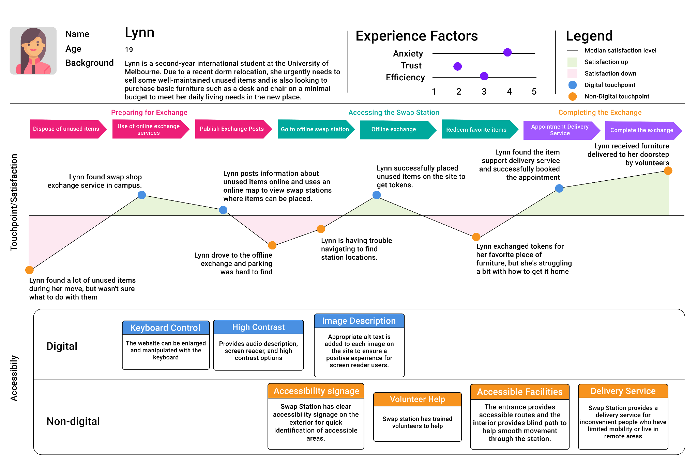
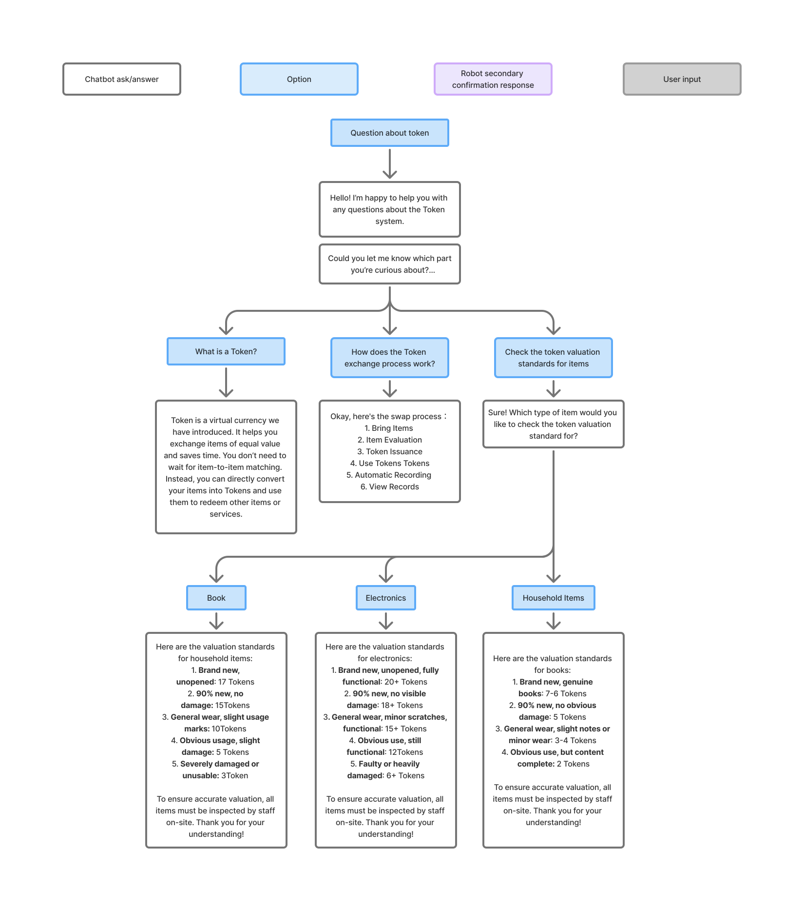
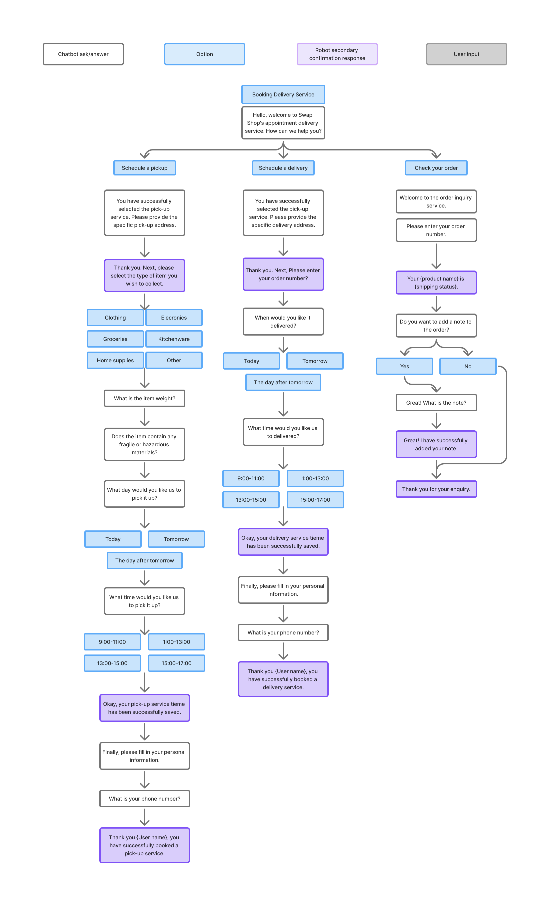

SERVICE DESIGN · AI CHATBOT
校园二手物品交换服务平台 + AI 客服 Sam
为墨尔本大学学生设计的校园二手物品交换服务。通过 Token 代币系统解决传统交换中价值不匹配的核心痛点，结合线下实体交换站与线上平台。AI 聊天机器人 Sam 提供智能推荐、站点查询、Token 规则解答和配送追踪——四轮用户测试驱动的对话设计，Voiceflow 平台实现，全链路无障碍支持。

ReSwap 的 AI 聊天机器人 Sam 是用户交互的核心入口，在 Voiceflow 平台上构建，覆盖四大对话场景。
Sam 向用户解释 Token 作为虚拟货币的工作原理：用户将物品带到 Swap Station → 物品评估 → 获得 Token → 使用 Token 兑换其他物品或服务。无需等待以物易物匹配，直接通过 Token 完成价值交换。

Sam 逐步收集用户需求——询问物品类型、当前状况、用户偏好，引导用户选择用物品兑换 Token 或用 Token 交换物品，完成全流程对话引导。

校园设有三种交换站：Main Swap Station（主站）、Café Swap Station（咖啡厅站）、Mini Swap Station（迷你站）。Sam 提供各站位置、开放时间及无障碍设施信息。

支持上门取件与配送两种模式。用户选择物品类型、提供地址、选择日期与时间段，Sam 确认物品重量与是否含易碎/危险品后完成预约，支持订单号查询状态。

用户寄存闲置物品后获得 Token（按物品价值评估），可用于兑换站内其他物品或校园商店优惠券，解决了传统一对一交换中价值不匹配、匹配效率低的问题。
针对轮椅使用者等行动不便群体，系统匹配校园志愿者完成物品取送。志愿者完成任务可获得 Token 奖励，形成互助激励闭环。
线下站点配备坡道、盲道、自动门；线上平台支持 WCAG 2.1 标准、高对比度模式、屏幕阅读器兼容、语音输入/输出。
智能物品推荐 + 交换站信息查询 + Token 规则解答（知识库集成）+ 配送订单追踪（Airtable API）+ Google Maps 一键导航。